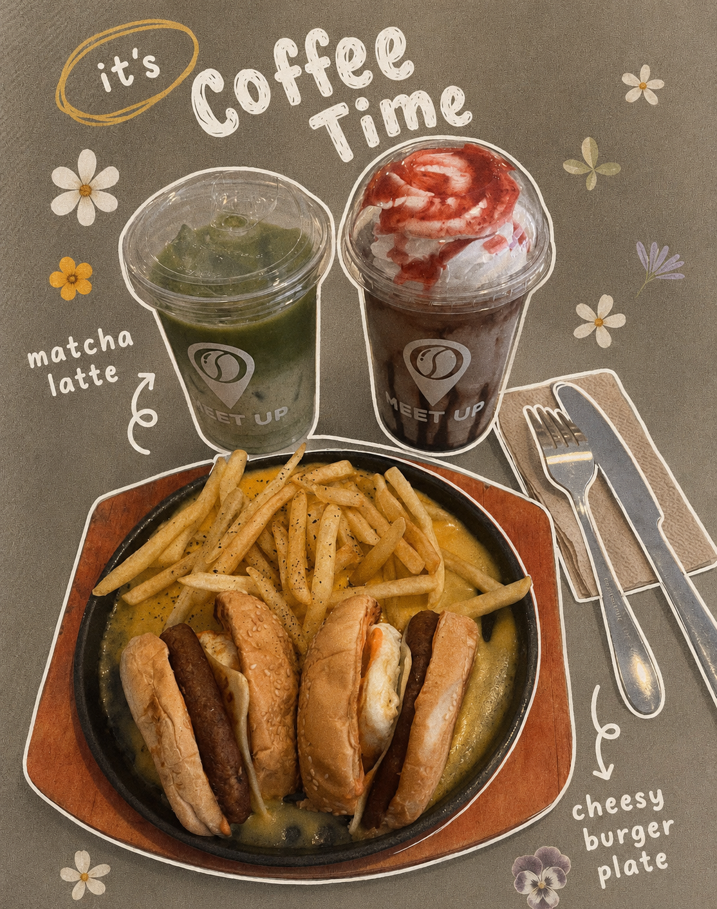
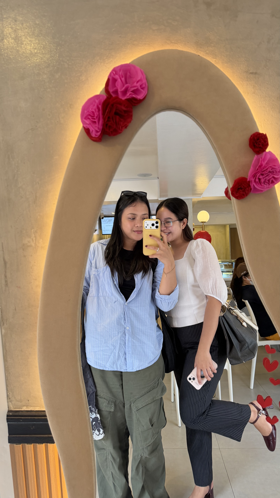
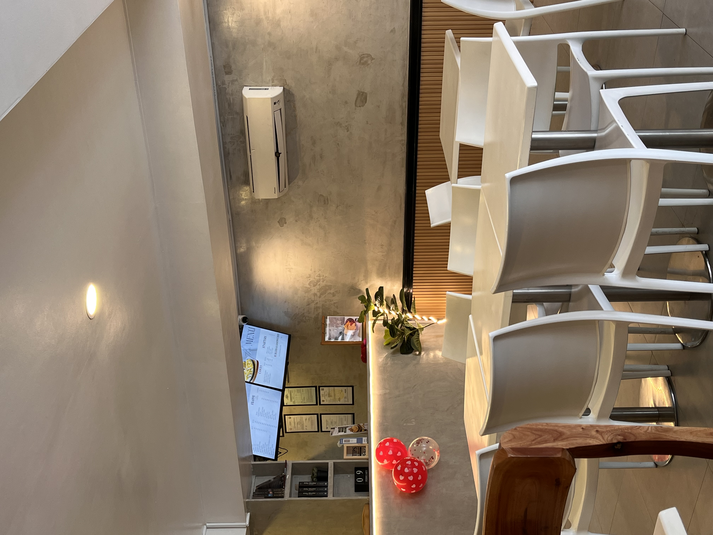

Café Review
Meet Up Coffee Shop: A Cozy Place for Coffee and Study
May 24, 2025

On May 24, 2025, I visited Meet Up Coffee Shop in search of a quiet and comfortable place where I could enjoy a frappe and study. I was hoping to find a café with a relaxing atmosphere, and this place turned out to be a lovely choice.



Location and Ambiance
Meet Up Coffee Shop is located along Magallanes Street, Barangay III, Roxas City 5800, which made it easy to find. The café has a cozy and modern interior design that creates a welcoming atmosphere. During my visit, the place was quiet, comfortable, and not crowded, making it an ideal spot for studying or spending time alone.
The temperature inside was also just right — not too hot and not too cold — which added to the overall comfort of the experience.
Menu and Service
The café has a pleasant display area for cakes, and there is also a monitor at the counter where customers can easily view the available items. Their menu includes pasta, cakes, coffee, and frappe. The staff were friendly and accommodating, and they explained the food well whenever I asked questions. I also appreciated that they allowed me to customize my drink.
Food and Drink Review
I ordered a frappe, and I found the taste to be very good. The drink was worth the price, and the presentation was pleasing and visually appealing. It was definitely Instagram-worthy.
Another advantage of the café is that it offers free Wi-Fi, which is especially useful for students or anyone who wants to study while enjoying a drink. The café also has a mirror area where customers can take photos, adding a nice touch to the overall experience.
Final Thoughts
Overall, I had a very good experience at Meet Up Coffee Shop. It is a comfortable café with a cozy environment, good service, and a relaxing atmosphere. It is the kind of place that is suitable for studying, unwinding, or simply enjoying a frappe.
I have already returned to this café several times after that visit, and I would honestly recommend it to my friends. If you enjoy coffee shops and peaceful spaces, Meet Up Coffee Shop is definitely worth visiting.